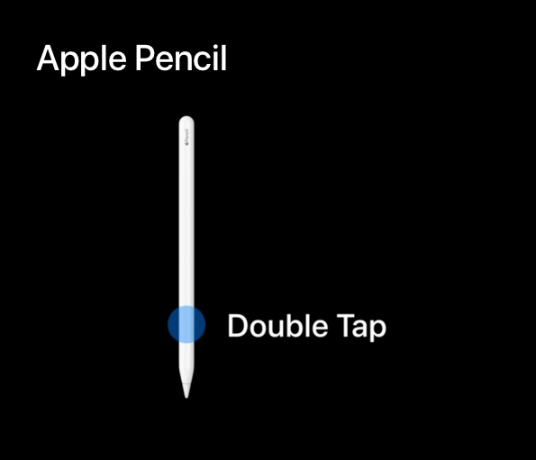

Apple 在 10 月 30 日发布了全新的 iPad Pro 11 寸版本和 12.9 寸版本，它们去除了 Home 键、配备了 Face ID，从而使得边框变得极窄，iPad Pro 也步入了无 Home 键的时代。但与之前发布的 iPhone Xs、iPhone Xs Max 不同，全新的 iPad Pro 并没有刘海。同时，Apple 发布了第二代 Apple Pencil，在这支笔上配备了双击手势功能。那在设计与开发适配全新的具备 Split View、Slide Over 功能、搭配第二代 Apple Pencil 的 iPad Pro 时，有什么要注意的呢？
在进一步阅读此文章前，推荐阅读这篇文章的姊妹篇，有利于更好地理解 Apple 最新 iPhone、iPad 的适配原则：
- Designing For iPhone X —— iPhone 上有了刘海，设计和开发到底该咋整?
- Designing For iPhone Xs、iPhone Xs Max — 比大还大，更大的刘海屏 iPhone 来了（待更新）
- Note:
- 全文未完成，仍在不断补充更新中...
屏幕尺寸
全新的 iPad Pro 11″ 与 iPad Pro 10.5″ 相比，在去除了 Home 键之后，将上下边框（竖屏模式下）缩小，而机身尺寸几乎变化不大，故屏幕由原来的 10.5 寸增大为 11 寸。因此 iPad Pro 11″ 在横屏模式下的屏幕高度与 iPad Pro 10.5″ 是相同的，但在横屏模式下的屏幕宽度比 iPad Pro 10.5″ 多出了 82pt @2x，即横屏模式下 iPad Pro 11″ 为 1194 × 834pt @2x，iPad Pro 10.5″ 为 1112 × 834pt @2x。
全新的 iPad Pro 12.9″ 与第二代 iPad Pro 12.9″ 相比，在去除了 Home 键并缩小了上下边框（竖屏模式下）后，整体机身尺寸变小一圈，使得屏幕仍保持 12.9 寸不变。因此第三代 iPad Pro 12.9″ 和前两代的 iPad Pro 12.9″ 的屏幕显示宽度、高度完全一致，即横屏模式下 1366 × 1024pt @2x。
有人可能会产生疑惑：同是新一代的 iPad Pro，为什么 11 寸的和 12.9 寸的相比上一代的变化方式不同？一个增大屏幕、保持机身尺寸几乎不变；一个保持屏幕尺寸不变、减小机身尺寸。如果新的小尺寸的 iPad Pro 仍然保持 10.5 寸屏幕、减小机身尺寸，iPad 分辨率的变种不就更少、适配不就更简单？一个个人感觉靠谱的说法：iPad Pro 的定位是注重生产力的个人电脑，Smart Keyboard 是其重要的一个配件，不可或缺，如果机身尺寸在上一代的基础上进一步缩小，那就会导致全尺寸的 Smart Keyboard 的按键设计出现问题。所以基于此，Apple 不会再减小 iPad Pro 的机身尺寸，自然只能扩大屏幕尺寸。
App 的适配与设计
全新的 iPad Pro 的屏幕与 iPhone Xs 一样是四个圆角，所以在设计 app 时，应该避免重要的信息或控件出现在四个角落，以免被圆角遮挡或切割。像 Status Bar、Navigation Bar、Tab Bar、Tool Bar 这些会覆盖到边角的标准控件，应该被自动且正确地放置。
为了让你的 app 在全新的 iPad Pro 上完美地呈现，你需要在设计 app 时遵守下面三个原则：
使用安全区域布局规范（Safe Area Layout Guides）阻止界面元素被屏幕圆角切割或者被 Home Indicator 遮挡。
在屏幕上没有其他控件时，安全区域几乎覆盖整个屏幕，在横屏和竖屏模式下，需要在底部留出 20pt 高度的区域给 Home Indicator，以防内容被 Home Indicator 遮挡。

不要尝试在 Home Indicator 周围放置控件、元素，虽然在全屏模式下，Home Indicator 是位于屏幕底部中央位置的，但在 Split View 中，Home Indicator 的位置会跟随 app 发生变化。如果有内容放置在 Home Indicator 两边就可能会被遮挡。

当界面中显示 Status Bar 时，Status Bar 的高度是 24pt，而不是 iPhone 或者前几代 iPad 上的 20pt。

特别提示，在 Slide Over 模式中，app 的安全区域完全充满 app 的可显示区域，安全区域到顶部和底部的距离均为 0pt。

在界面中有 Navigation Bar、Tab Bar 或者 Tool Bar 时，不管屏幕方向是横向还是纵向，安全区域到左右两侧的距离均为 0pt。这不同于 iPhone Xs，在横向屏幕时，因为刘海的缘故，需要在左右两侧留出对称相等的安全距离。
使用布局边界（Layout Margins）从屏幕左端到屏幕右端插入内容。
布局边界在内容之间、屏幕的左右边缘提供了可以呼吸的空间，也有利于内容与 Status Bar、Navigation Bar、Tab Bar、Status Bar 上的内容相对齐。同时布局边界也使得内容不会滚动到屏幕边缘的圆角中去。

布局边界的宽度是由 app 的 Size Class 来决定的。在 Regular 普通模式（如iPad Pro 11″ 横屏模式）下，布局边界的宽度是 20pt；在 Compact 紧凑模式（如 iPhone Xs Max 竖屏模式）下，布局边界的宽度是 16pt。有关于 Size Class 的更多细节可以阅读我的另一篇文章：尺寸级别和核心要素 Size Classes and Core Components - WWDC 2017 Session 812
要考虑到多种不同的屏幕比率。
所有之前的 iPad 的屏幕比率是 4:3，iPad Pro 11″ 有着更宽的屏幕比率。
例如，一个游戏只为 4:3 比率而设计，那么在横屏模式下的 iPad Pro 11″ 上显示时，左右两侧就会出现黑条，或者当 app 充满屏幕显示时，上下两侧的内容就会被切掉。所以要特别注意那些独立的界面元素的位置和大小。

Apple Pencil 新功能的设计

- 第二代 Apple Pencil 在笔身上增加了一个双击手势。用户可以在系统设置中为双击手势选定一个固定操作，这也给用户在使用各个 app 时提供了连贯一致的、可预测的使用体验。用户可以在以下几种选项中选择双击手势的操作：
- 在当前选择的工具和橡皮擦之间切换；
- 在当前选择的工具和上次使用的工具之间切换；
- 展示一个调色板；
- 关闭双击手势功能。

为了在 app 中提供不同功能的 Apple Pencil 双击操作手势，你需要遵守下面几个原则：
如果在系统设置中用户关闭了双击操作手势，app 就不应该响应用户在 Apple Pencil 上的双击操作手势。

在任何可能的时候，都要遵守系统的设置。在你的 app 中如果存在多种不同的笔功能、橡皮擦功能、调色板功能，但却并没有遵守双击操作手势对应功能的系统设置，这种不一致、不连贯的操作会让你的 app 变得不直观，特别是在配合其他支持 Apple Pencil 的 app 进行多任务操作时尤为明显。

如果在你的 app 中，需要针对双击手势提供不同于系统设置中的功能，确保让这个自定义的行为默认保持关闭。在用户明确需要的时候，由用户主动开启，以让 app 中的自定义功能覆盖系统层级中设定的功能。这样也防止了用户在使用你的 app 时发现其行为与其他 app 不一致。

如果你的 app 支持 Apple Pencil，但并不支持或不完全支持在系统设置中提到的几个双击手势功能，你可以尽可能地将相似含义的功能映射到 Apple Pencil 的双击手势上，以保持连贯一致。例如在一个照片类 app 中，Apple Pencil 的双击手势可以在两种不同的滤镜模式中切换。不要让 Apple Pencil 的双击手势执行直接修改内容的操作以防止出现严重的操作失误，因为双击手势这个操作很容易误操作。
不管 Apple Pencil 的双击手势在你的 app 中对应什么操作，确保总是给用户提供有关于 Apple Pencil 双击后发生了什么的清晰、及时的视觉反馈，这样用户可以及时感知到 app 的行为发生了变化，如果是误操作可以及时恢复。
要向第一代、第二代 Apple Pencil 的用户都提供一份绝佳的使用体验。Apple Pencil 双击手势所提供的功能应该是用户在 app 中某个功能的快捷方式，而不是在 app 的界面中找不到的功能。
Read More
Apple 官方
如果你觉得这篇文章对你有所帮助，欢迎请我喝杯咖啡，感谢你的支持😁